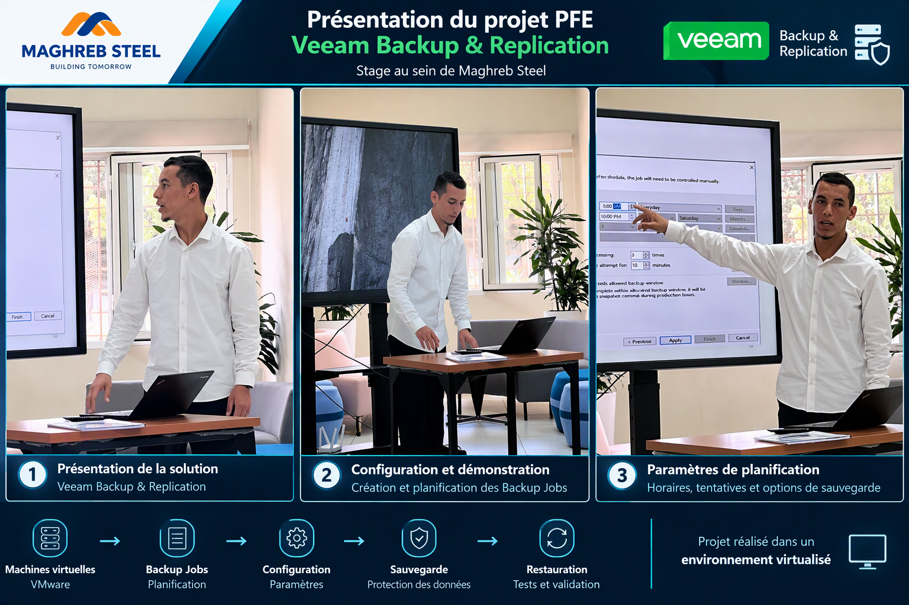

Backup Solution with Veeam Backup & Replication
Final academic project completed during an internship at Maghreb Steel, focused on the study, installation and configuration of a backup and restore solution in a virtualized environment.
Context & objectives
Study and implement the principles of a backup strategy designed to protect data and virtual machines.
Project context
This project was completed during my final academic internship at Maghreb Steel. The work focused on Veeam Backup & Replication and its use in a virtualized environment to configure, schedule and test backup and restore operations.
Objectives
Virtualized environment
The project demonstrates the use of Veeam Backup & Replication within a virtualization environment.
Virtualized infrastructure
Environment containing the virtual machines used as sources for backup and restoration operations.
Veeam Backup & Replication
Solution used to configure backup jobs, manage their execution and study restoration mechanisms.
Backup storage
Logical destination used to store data generated by backup jobs within the project environment.
Backup cycle
Simplified overview of the workflow studied during the project.
Project steps
Main operations studied and presented as part of the final academic project.
Veeam overview
Study of the role of Veeam Backup & Replication, its main features and its use in protecting virtualized environments.
Installation
Installation of the solution in the environment used to carry out the project.
Configuration
Preparation of the components required to create and execute backup jobs.
Backup Jobs
Creation of backup jobs, selection of the items to protect and configuration of the required parameters.
Scheduling
Definition of execution times and frequencies to automate backup operations.
Retry handling
Study of execution retry settings when a backup job does not complete successfully.
Verification
Monitoring backup job status and validating that backup operations completed successfully.
Restore
Study and execution of restore tests to verify the recovery process for previously backed-up data.
Technical demonstration & presentation
Presentation of the main Veeam Backup & Replication configuration steps, including backup jobs and scheduling.

Technical presentation of the final academic project focused on Veeam Backup & Replication.
Work completed
Main tasks carried out as part of this final academic project.
Analysis of Veeam Backup & Replication features and data protection principles.
Installation and preparation of the solution within the project's virtualized environment.
Creation and configuration of backup jobs.
Configuration of execution times and automatic backup schedules.
Study of retry and recovery settings in the event of a backup job failure.
Execution of tests to study and validate the restoration process.
Technologies & concepts
Main technologies and backup concepts covered during the project.
Project outcome
Understanding the backup / restore lifecycle
This project allowed me to strengthen my understanding of Veeam Backup & Replication, from creating and scheduling backup jobs to monitoring their execution and performing restore tests in a virtualized environment.